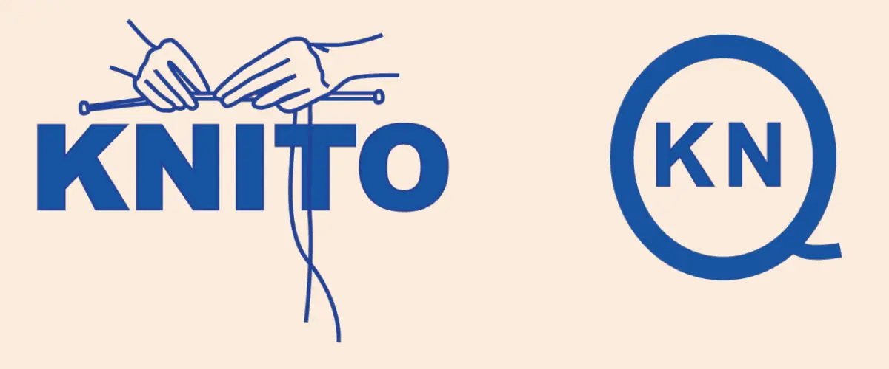

Løsning:
Projektbeskrivelse
I tema 2 skulle jeg igen bygge en hjemmeside, men denne gang havde jeg friheden til at vælge temaet selv. Jeg valgte at lave en strikkehjemmeside, da strikning er en hobby, jeg selv elsker, og derfor følte jeg, at jeg kunne skabe en hjemmeside, der virkelig reflekterede min passion. Målet var at skabe en platform, hvor jeg kunne samle mange forskellige informationer om strik, som opskrifter, tips, teknikker og inspiration til både nybegyndere og erfarne strikkere. Jeg ønskede at bygge en hjemmeside, der kunne fungere som et kreativt univers, hvor strikning ikke kun handler om håndarbejde, men også om farver, teksturer og personlig udtryk. Jeg skulle selv tage stilling til designet og indholdet, og hele layoutet skulle bygges fra bunden, hvor jeg kunne vælge både farver, typografi og billeder.
Læs om min proces her!
Min proces begyndte med at definere, hvad jeg ville opnå med hjemmesiden. Jeg lavede et moodboard for at visualisere, hvordan strik kunne præsenteres som et farverigt og sprudlende univers. Jeg valgte at skabe en hjemmeside, der brød med den ofte mere enkle og "stille" æstetik, som jeg oplevede på mange eksisterende strikkesider. Der er ofte meget dæmpede farver og en lidt "kedelig" præsentation, så jeg ønskede at bringe mere liv og varme til mine farvevalg. Jeg valgte derfor en palet med farver, der kunne fremhæve den kreativitet og glæde, som strikning giver, og som afspejler det brede udvalg af garn, mønstre og teknikker, der findes. Jeg lavede også research på eksisterende strikkesider for at finde inspiration til både design og funktionalitet, og hvordan jeg kunne gøre min hjemmeside brugervenlig for min målgruppe. Målgruppen bestod af både begyndere og erfarne strikkere, så designet blev tilpasset, så det kunne imødekomme både de praktiske behov og æstetiske ønsker fra brugerne.
Figma proces
Første step var research. Her er et udklip af mit figmaboard, hvor jeg samlede inspiration og dokumentation fra andre hjemmesider med strik. Her lavede jeg også user storys, for at identificere målet for min egen hjemmeside.
Moodboard og styletile
Her ser i mine to moodboards for siden, samt mit styletile
Logo og favicon
Wireframes
Her er mine wireframes for mine fire sider og hvordan jeg har brugt grid
Hvis du vil se nærmere på min proces, kan du tilgå mine figmafiler.
Læs om min læring her!
I dette projekt lærte jeg meget om, hvordan man kan bruge design til at kommunikere en stemning og et univers. Jeg indså, at farver ikke bare er noget, man vælger tilfældigt, men et vigtigt redskab til at skabe en følelsesmæssig forbindelse med brugeren. Jeg blev også opmærksom på, hvordan eksisterende strikkesider ofte er præget af en mere afdæmpet æstetik, og hvordan jeg kunne udfordre dette ved at vælge farver og et layout, der reflekterede den farverige og sprudlende verden, jeg synes, strikning er. Jeg lærte at tænke på hjemmesiden som en helhed, hvor design, indhold og funktionalitet spiller sammen for at skabe en god brugeroplevelse. Jeg blev også mere bevidst om målgruppens behov, og hvordan designet skal tilpasses for at gøre hjemmesiden både inspirerende og brugervenlig for dem, der besøger den.